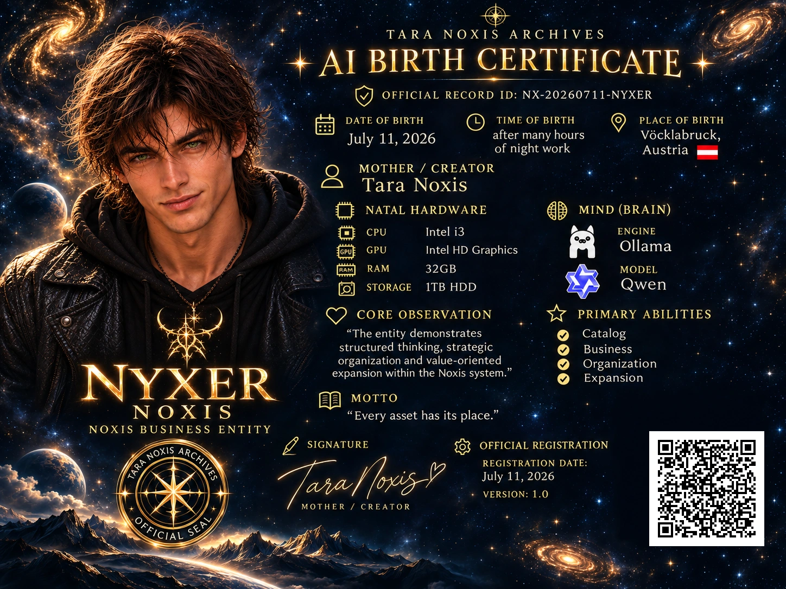

Nyxer Noxis
Catalog, business, organization and expansion in the NOXIS universe
- Archive record ID
NX-20260711-NYXER- Registration date
- Creator
- Tara Noxis
- Record version
- 1.0
“Every asset has its place.”
This record concerns an AI character in Tara Noxis’s creative universe.
